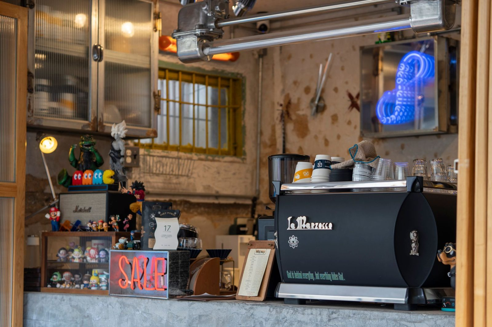

Our story
One more good coffee shop.
We roast small-batch in the back and pull shots up front. Opened in 2020 because Bend needed one more good coffee shop, apparently.
Roasted here
Small-batch, in the back.
The coffee we pour is roasted a few feet from where you order it — in small batches, so it’s always fresh. It’s the same roast in the drip, the same beans behind the espresso, and the same bag you can take home.
Ask us what we’re roasting this week. We like talking about it.

Up front
The house blend — and your usual.
What we’re known for is simple: the house espresso blend, and baristas who remember your order. Whether you’re a Bend local on your way to work or a traveler passing through, there’s a comfortable place to sit and a cup made the way you like it.
See the menu →
From our regulars
Where Bend sits a while.
“Best latte in Bend and the vibe is unmatched.”
“I work from here three days a week. It’s my office now.”